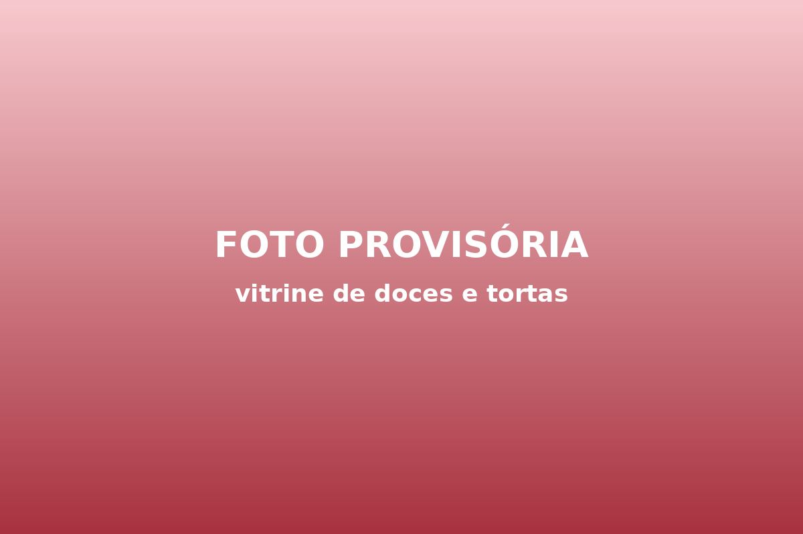
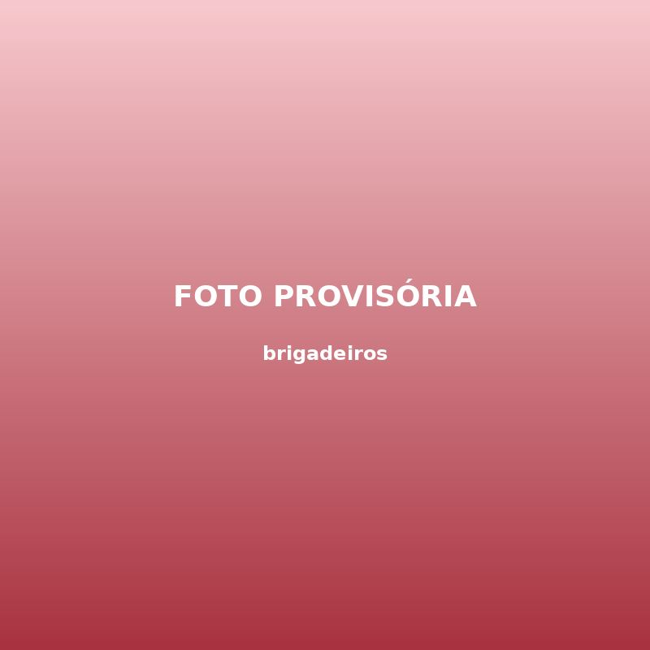
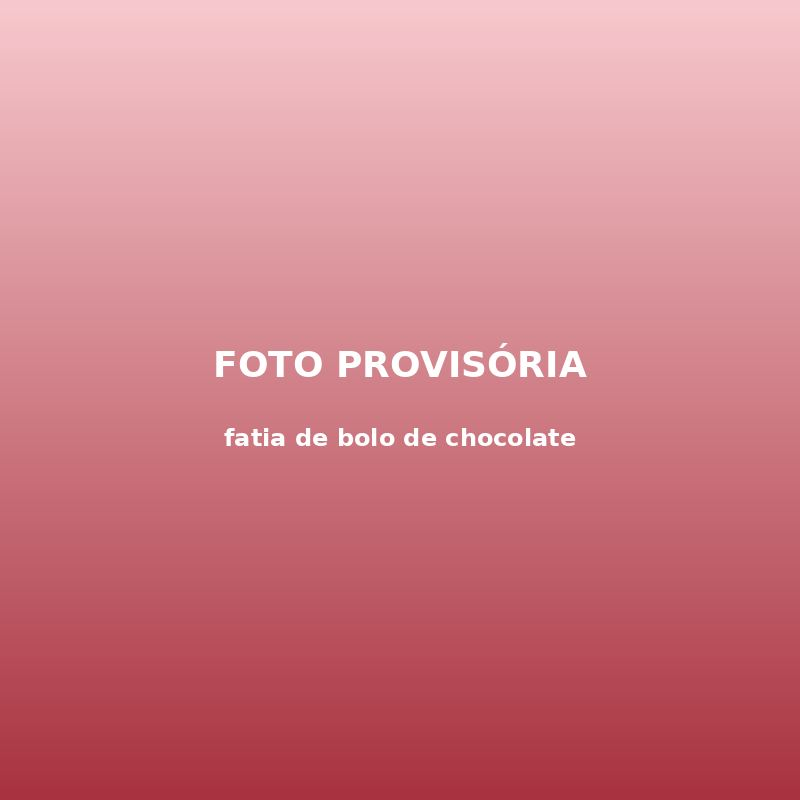
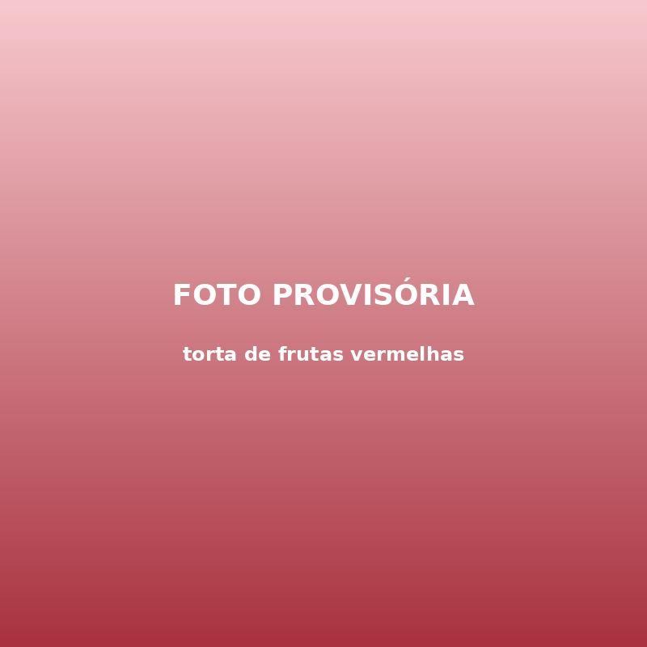
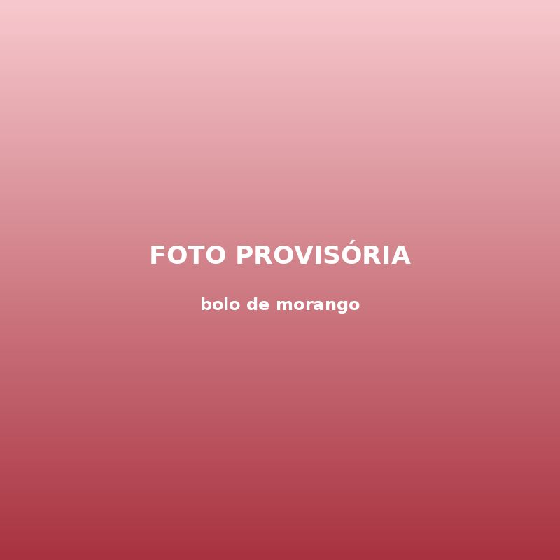
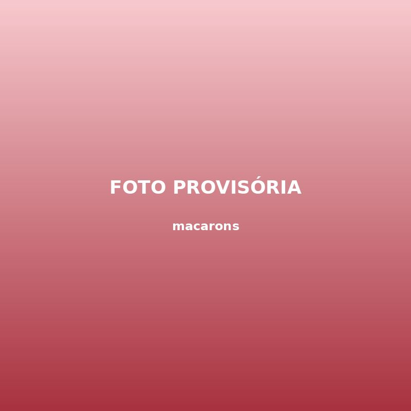
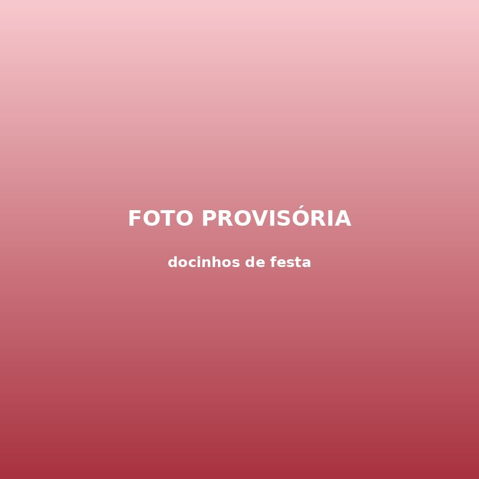
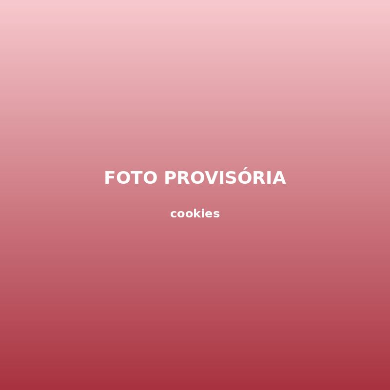

Confeitaria · Lagoa Mansa
Três Colheres Confeitaria
Bolos por encomenda, doces de festa e café no balcão. Tudo feito à mão, todos os dias, no centro de Lagoa Mansa.
Cardápio
Os queridinhos da casa
Bolos inteiros
- Bolo de cenoura com brigadeiroR$ 75
- Red velvetR$ 110
- Morango com chantiliR$ 120
Doces de festa
- Brigadeiro gourmet (cento)R$ 160
- Beijinho (cento)R$ 150
- Bem-casado (unidade)R$ 4,50
No balcão
- Fatia de boloR$ 12
- Café coadoR$ 6
- Torta de frutas (fatia)R$ 16
Valores fictícios, apenas para demonstração. Encomendas com 48 horas de antecedência.
Ver cardápio completo
Sobre
Começou com três colheres de pau
A Três Colheres nasceu na cozinha de casa, com uma receita de família e três colheres de pau que estão até hoje penduradas no balcão. Das encomendas para os vizinhos veio a primeira vitrine e, depois, a loja no centro.
Seguimos fazendo tudo como no começo: massa batida na hora, recheio de verdade e nenhuma pressa para tirar o bolo do forno.
-
Feito à mão
Produção diária, em pequenas fornadas. -
Encomendas em 48 h
Bolos personalizados com dois dias de antecedência. -
Café no balcão
Uma fatia e um café coado, de terça a domingo.
Galeria
Saindo do forno








Onde estamos
Rua dos Ipês, 45 — Centro
Lagoa Mansa (cidade fictícia)
Localização e contato
Três Colheres ConfeitariaRua dos Ipês, 45 — Centro
Lagoa Mansa (cidade fictícia)
- Terça a sábado
- 9h às 19h
- Domingo
- 9h às 13h
- Segunda
- Fechado